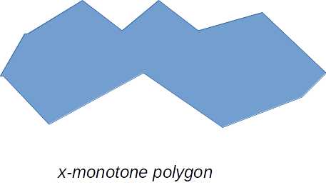

Polygon Triangulation
A Project by Christopher R. Wicks
for Computational Geometry
Rochester Institute of Technology
Fall 2016 Semester
Project Introduction
Plane-sweep algorithms are a fundamental way of conceptualizing an algorithmic solution to many problems in computational geometry. They involve moving a figurative hyperplane across an n-dimensional space, processing event points as we bump up against their physical location. Since we will be dealing with 2 dimensions, the hyperplane is in fact a line, and for our purposes we will refer to these algorithms as "sweep-line" algorithms. These algorithms tend to be intuitive in explanation, but can contain a lot of moving parts, which leads to the fact that implementation details and deeper understanding can often be elusive.
In this project, an attempt is made at visualizing a two-phase sweepline algorithm for triangulating arbitrary closed polygons. The first phase of the algorithm decomposes the input polygon into simpler, x-monotone polygons, and the second phase further simplifies the sub-polygons by decomposing them into triangles.
x-monotonicity
A polygon is said to be x-monotone if for any given vertical line on the plane, that polygon is intersected by that line at most twice.
